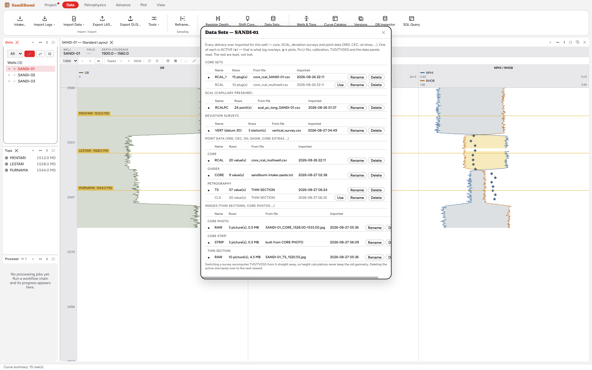

Data Sets is the register of deliveries for one well. Its own opening
line says it best:
Every delivery ever imported for this well — core, SCAL, deviation surveys
and point data (XRD, CEC, oil show, …). One of each is ACTIVE (●) — that is
what log overlays, φ-k plots, Pc/J-fits, calibration, TVD/TVDSS and the
data panels read. The rest are kept, not lost.
Reach for it whenever two deliveries of the same measurement exist and
you need to know, or decide, which one the project is actually using.
The dialog

SANDI-01's register: two core deliveries with only one active,
the SCAL delivery, the three-station vertical survey TVD is computed
from, and the point-data deliveries including one pasted through
Intake.
One active per kind. Curve sets are read together (RAW priority,
others fill gaps), but core, SCAL, surveys and point data are different:
two such deliveries measure the same plugs or samples, so exactly one
core set, one SCAL set, one survey and one set per point dataset is
active, and every reader in the app follows that choice.
Nothing is overwritten by arrival order. The example well holds
RCAL_1 (active, 15 plugs, from the single-well file) beside RCAL
(10 plugs, from the multi-well file): the second delivery auto-suffixed
instead of replacing the first, and Use is how you switch.
No survey means vertical, and the dialog says so: "No deviation
survey imported — the well is treated as vertical (TVD = MD)" (shown
here as the dialog prints it).
Every row records its source file and import time, so a number in a
plot can be traced to the delivery it came from.
Step by step
Open Data ▸ Data Sets… with the well selected (the same
register is browsable per well under the Wells-pane ▸ twisty, where
double-click switches the active set).
To change what the project reads, press Use on the delivery
that should be live; Rename and Delete manage the rest.
Reading the result
Switching is immediate and consequential: activating a different survey
recomputes TVD and TVDSS straight away, so height calculations never keep
the old geometry, and deleting the active delivery hands over to the next
newest rather than leaving the kind empty. Switching a core set also
switches the extras that were delivered with it, because they were written
under the core set's own name.
QC and pitfalls
Check the ● before comparing to a plot. A φ-k cloud that
changed since last week usually means someone activated a different
core delivery, not that the data moved.
Keep superseded deliveries, do not delete them. The register
is the audit trail for "which lab file is this number from"; disk space
is not the constraint here.
A vertical well is a statement, not a default to forget. If a
deviated well shows "treated as vertical", the survey delivery is
missing and every TVD-dependent result is provisional.